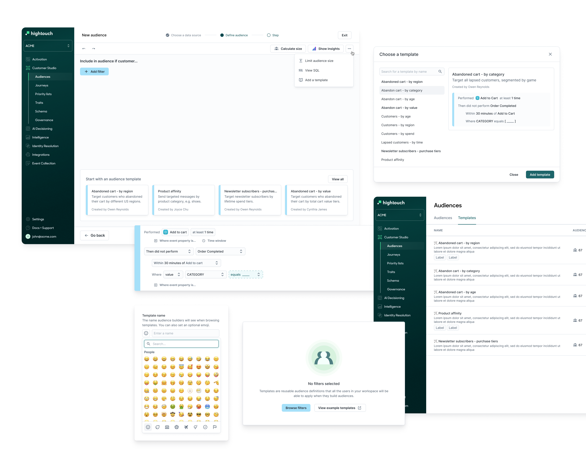
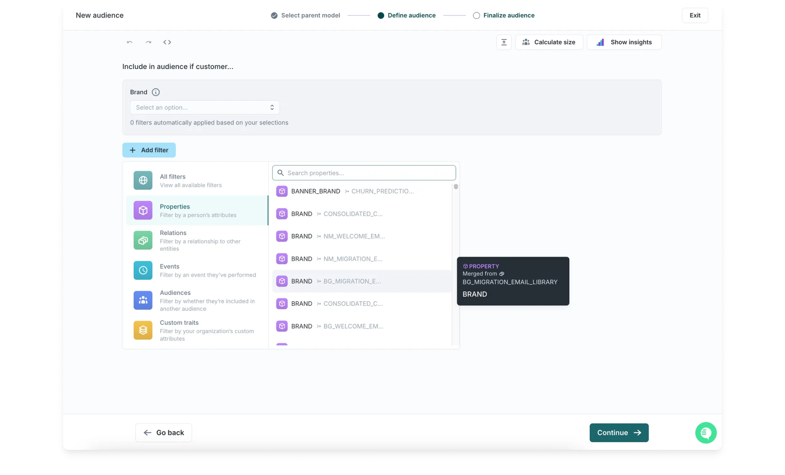
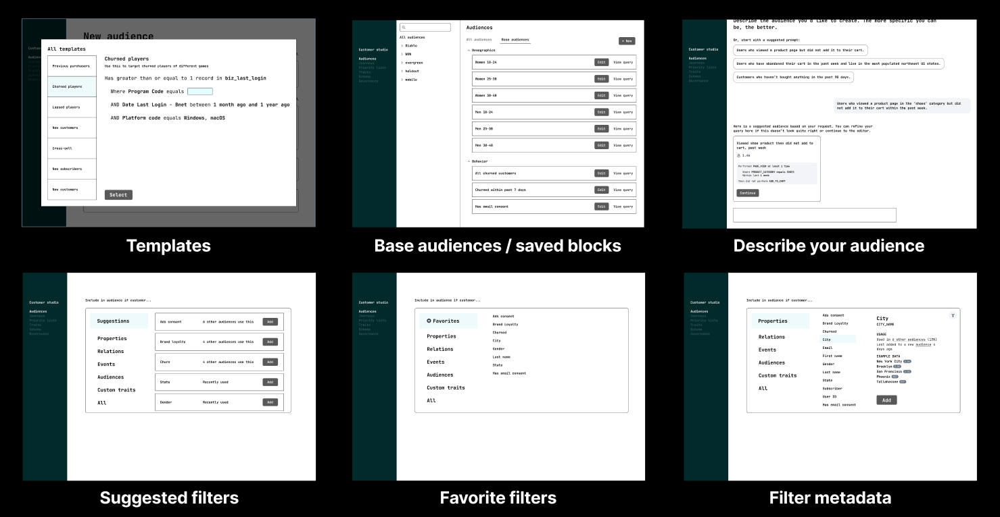
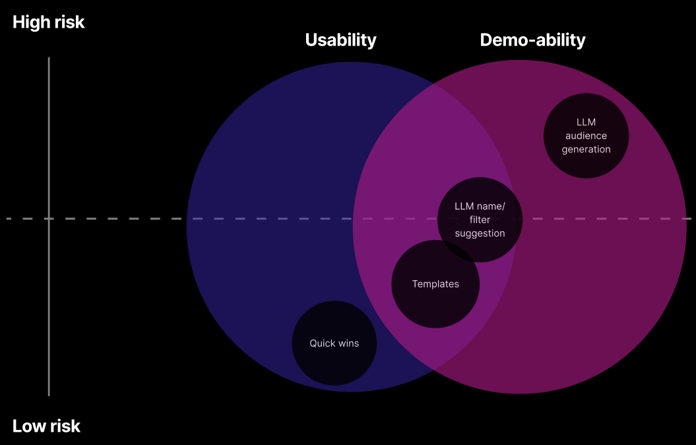
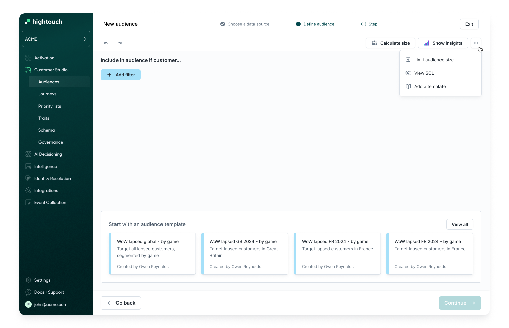
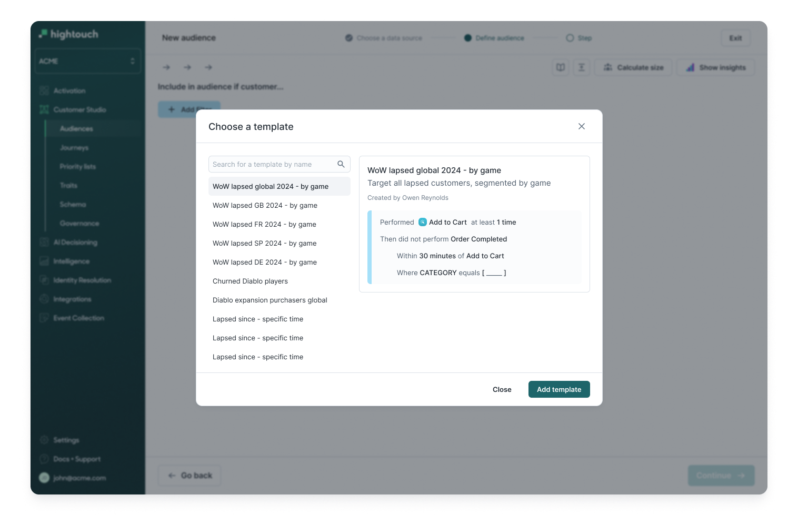
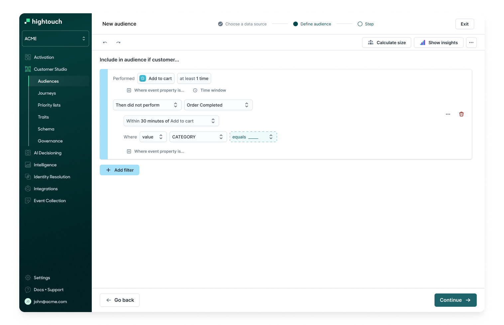
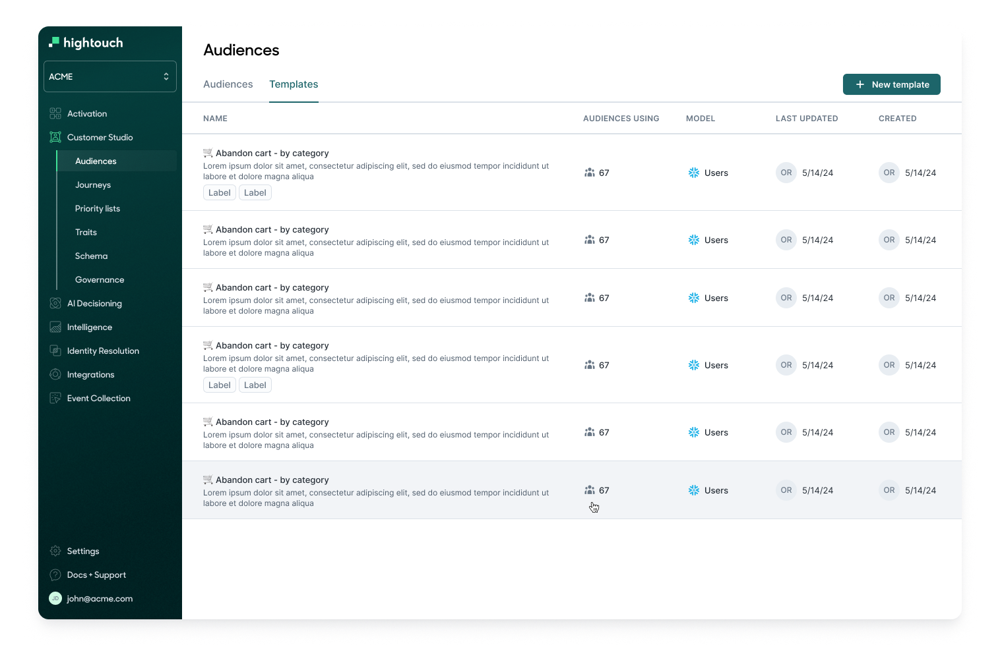
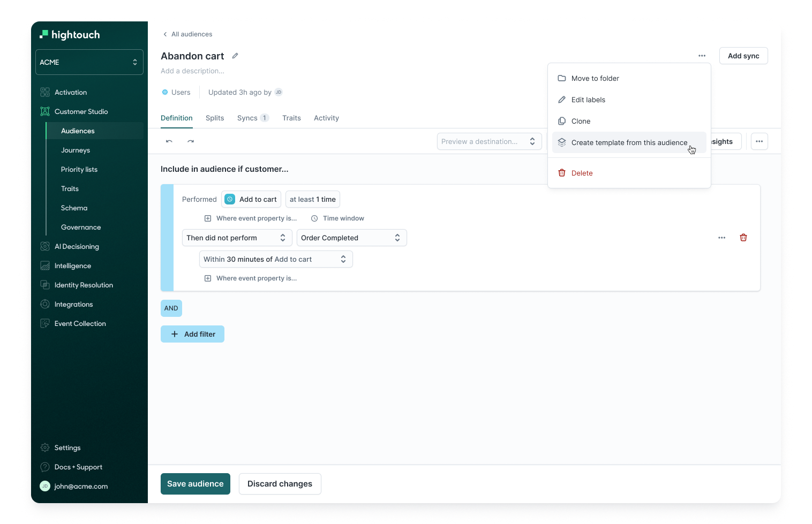

<!DOCTYPE html>
<html lang="en">

<head>
	<title>Emily Porat | Audience templates</title>
	<link rel="stylesheet" type="text/css" href="styles/global.css">
	<link rel="stylesheet" type="text/css" href="styles/global-mobile.css">
	<link rel="stylesheet" type="text/css" href="styles/nav.css">
	<link rel="stylesheet" type="text/css" href="styles/projects.css">
	<script src="https://ajax.googleapis.com/ajax/libs/jquery/1.9.1/jquery.min.js"></script>
	<link rel="icon" type="image/x-icon" href="pics/favicon.svg"/>
	<!-- Icons -->
	<script defer src="https://use.fontawesome.com/releases/v5.13.0/js/all.js"></script>
	<script defer src="https://use.fontawesome.com/releases/v5.13.0/js/v4-shims.js"></script>
	<!-- Global site tag (gtag.js) - Google Analytics -->
	<script async src="https://www.googletagmanager.com/gtag/js?id=UA-119412150-1"></script>
	<script>
		window.dataLayer = window.dataLayer || [];
		function gtag(){dataLayer.push(arguments);}
		gtag('js', new Date());

		gtag('config', 'UA-119412150-1');

      // load other reused files
      $(function() {
      	$('#nav').load('https://emilyporat.com/nav.html');
      	$('#footer').load('https://emilyporat.com/footer.html');
      });
  </script>

    <script type="text/javascript">
    !function(){var e=window.htevents=window.htevents||[];if(!e.initialize)if(e.invoked)window.console&&console.error&&console.error("Hightouch snippet included twice.");else{e.invoked=!0,e.methods=["trackSubmit","trackClick","trackLink","trackForm","pageview","identify","reset","group","track","ready","alias","debug","page","once","off","on","addSourceMiddleware","addIntegrationMiddleware","setAnonymousId","addDestinationMiddleware"],e.factory=function(t){return function(){var n=Array.prototype.slice.call(arguments);return n.unshift(t),e.push(n),e}};for(var t=0;t<e.methods.length;t++){var n=e.methods[t];e[n]=e.factory(n)}e.load=function(t,n){var o=document.createElement("script");o.type="text/javascript",o.async=!0,o.src="https://cdn.hightouch-events.com/browser/release/v1-latest/events.min.js";var r=document.getElementsByTagName("script")[0];r.parentNode.insertBefore(o,r),e._loadOptions=n,e._writeKey=t},e.SNIPPET_VERSION="0.0.1",
    e.load('52563112fa7908fd58cfdf62691565c30da3674950b876658e4f2df5791f34f9',{apiHost:'us-east-1.hightouch-events.com'}),
    e.page()}}();
    </script>
</head>

</html>
<body class="preload">
	<meta name="viewport" content="width=device-width">
	<div id="nav"></div>
	<div id="arrow-up" onclick="slideUp()"><i class="fa fa-angle-up"></i></div>

	<div class="full-width" style="background-color: var(--lightblue)">
		<div class="title-wrapper animate-reveal animate-first">
			<div class="title">
				<div>
					<h4>Hightouch • 2024</h4>
					<h1>Audience templates</h1>
					<h3>Enabled marketers to leverage reusable templates for audience segmentation</h3>
				</div>
			</div>
		</div> 

		
	</div>


	<div class="panel">
		<div class="body right">
			<div class="context-summary">

				<h2>Overview</h2>

				<p class="p-XL">
					I led research, design, and product for a new audience template feature that helped increase audience creation rates by 20%, decrease time to build an audience by 40%, and improved demo-ability of Hightouch's Customer Studio product.
				</p>
				<p><a href="#final-design">Jump to final designs →</a></p>

				<div class="space"></div>

				<div class="context-specifics">
					<div class="context-description">
						<h4>Role</h4>
						<p>Design Lead</p>
					</div>

					<div class="context-description">
						<h4>Duration</h4>
						<p>3 months</p>
					</div>

					<div class="context-description">
						<h4>Released</h4>
						<p>March '24</p>
					</div>
					
					<div class="context-description">
						<h4>Team</h4>
						<p>Me, 2 engineers</p>
					</div> 
				</div>

				
				<div class="space"></div>

				<h3>Background</h3>
				<p>Hightouch is a composable Customer Data Platform (CDP) that enables businesses to sync their data to many different tools. </p>
				<ul>
					<li>Hightouch's <a target="_blank" href="https://hightouch.com/docs/customer-studio/overview">Customer Studio</a> audience builder is a no-code interface that allows marketers to segment their customer base into cohorts so they can target them with personalized campaigns, e.g. “Customers age 18-25 who abandoned their carts.” </li>
					<li>Once created, these audiences can be synced to the marketing platform of their choice, e.g. Iterable, Braze, Facebook, TikTok, etc.
					</li>
				</ul>

				<div class="space"></div>


				<h3>Problem</h3>
				<p>When users create a new audience, they're met with a blank screen, followed by a daunting list of hundreds or thousands of filters that come from a data model set up by a more technical user. These filters often have confusing, technical, or redundant names with no descriptions, making it nearly impossible for most users to confidently select the right ones.
				</p>

				<div class="space"></div>

				<h3>Solution</h3>
				<p>Introduce a new feature: audience Templates. Templates allow trusted admins to define reusable audiences, providing an easy starting point and validated filters.
				</p>

				<div class="space"></div>

				<h3>Outcome</h3>
				<p>Building audience Templates improved creation rates, speed, and demo-ability of the product.</p>
				
				<div class="space"></div>

				<div class="highlight-box" style="background-color: var(--lightblue)">
					<h3>Contribution summary</h3>
					<div class="space"></div>
						<h4>I owned:</h4>
						<ul>
							<li>User research</li>
							<li>Low-to-hi fidelity UX/UI design</li>
							<li>Concept & usability testing</li>
							<li>Design system contributions</li>
							<li>Scoping & requirements</li>
							<li>Stakeholder management</li>
							<li>Feedback collection & priortization</li>
						</ul>
					<div class="space"></div>
					<p>There was no dedicated PM working with me on this project. The head of design helped support and the product lead overseeing this team was a key stakeholder.</p>
				</div>
				

		</div>
	</div>


	<div class="full-width-mid-page">
		<div class="panel dark" style="text-align: center; background-color: var(--lightgray)">
			<h3 style="color: black; margin-top: 60px; width: 50%; margin-left: 25%; margin-right: 25%">The audience builder</h3>
			<p style="color: black;">This workspace has 11 ‘Brand’ columns from different tables.</p>
			
		</div>
	</div>

	<div class="panel">
		<div class="body right">

				<h2>Process</h2>
				<p class="p-XL">This was part of a larger "marketer friendliness" initiative that had been running for a few months already.</p>

				<div class="space"></div>
				<h3>Activities</h3>
				<ul>
					<li>Desk research - watching user sessions/sales calls, competitor audit</li>
					<li>Internal research - understanding demo needs and known customer challenges</li>
					<li>Lo-fi concept design - went wide, explored many options</li>
					<li>External research - concept testing with customers</li>
					<li>Synthesis and mid-fi design</li>
					<li>Scoping, requirements, and hi-fi design</li>
					<li>Beta group + feedback collection</li>
					<li>General availability release</li>
				</ul>
				<p></p>

				<div class="space"></div>
				
				<h3>Initial research findings</h3>
				<div class="space"></div>

				<h4>Underlying data</h4>
				<p>
					The models that power the audience builder are set up by technical users who don’t usually build audiences and aren’t required to rename columns intuitively or add descriptions.
				</p>

				<div class="space"></div>

				<h4>Workarounds</h4>
				<p>Many users clone or reference existing audiences to get them started when building a new audience. Some customers even create their own unofficial audience templates that are only used for cloning or inclusion in other audiences.</p>
				
				<div class="space"></div>

				<h4>Governance</h4>
				<p>
					There is no way for admins to enforce a source of truth for correct audiences/filters — this need is becoming increasingly important for large enterprise customers with 100s of audiences and users.
				</p>

				<div class="space"></div>

				<h4>Metrics</h4>
				<ul>
					<li>Average audience creation success rate: 30% (Nov 2024)</li>
					<li>Average time it takes to create an audience: 5 minutes (Nov 2024)</li>
				</ul>

				<div class="space"></div>

				</p>

				<div class="space"></div>

				<div class="full-width-mid-page">
					<div class="panel dark" style="text-align: center; background-color: #000">
						<h3 style="margin-top: 60px; width: 70%; margin-left: 15%; margin-right: 15%">Low-fi design concepts I tested with 5 customers</h3>
						
					</div>
				</div>

				<div class="space"></div>

				<h3>Most promising solutions</h3>
				<p>Users were most interested in Templates by far.</p>
				<ul>	
					<li>Users were in favor of the concepts related to filtering down the list of possible columns, e.g. by suggested frequently used columns.</li>
					<li>An LLM-based "Describe your audience" solution was exciting, but users were universally wary that it would work well.</li>
					<li>After weighing the risk vs. reward of all the possible solutions, I recommended to leadership that we ship a set of quick wins focused on improving the filter picker UI, and invest a bigger chunk of time into building audience templates.</li>
				</ul>


				<div class="space"></div>

				<div class="full-width-mid-page">
					<div class="panel dark" style="text-align: center; background-color: #000">
						
					</div>
				</div>

				<div class="space"></div>

				<h3>The case for templates</h3>
				<ul>
					<li>Internal confidence: Solution Engineers and Technical Architects I spoke with agreed that customers would benefit from templates — companies with fewer marketing resources need suggestions or ‘best practices’ and want to know how they can get the most out of Hightouch. Enterprise orgs will find value in templates from the usability and governance angle.</li>
					<li>Customer excitement: “Templates would be the easiest for us to implement. I can immediately think of what they would be.” -Technical Program Manager at an enterprise eCommerce company</li>
					<li>Business need: Templates will help us make progress on our larger 'Marketer Friendliness' initiative and we’ve seen competitors (like Growthloop) build templates that demo very well.</li>
				</ul>
				
				<div class="space"></div>
				
				<h3>Final designs</h3>
				<p>There are two main components to templates: access and usage by audience builders and creation/management by admins.</p>

				<div class="space"></div>

				<div class="space"></div>

				<div id="final-design" class="full-width-mid-page">
					<div class="panel dark" style="background-color: var(--lightblue)">
						<div class="img-panel-wrapper"> 
							
							<p class="text-in-panel-right">Templates are baked in to the audience creation flow, so it’s easy for users to start their audiences with a template if there’s one that suits their needs or start from scratch with the filters list if they know what they’re looking for.</p>
						</div>

						<div class="img-panel-wrapper"> 
							
							<p class="text-in-panel-right">Users can browse template previews before applying one.</p>
						</div>

						<div class="img-panel-wrapper" style="padding-bottom: 5%;"> 
							
							<p class="text-in-panel-right">Once selected, all the major filters should already be set — a user will need to do minimal modification, just fill in the blanks.</p>
						</div>

						<div class="divider" style="margin-left: 7%; width: 86%"></div>


						<div class="img-panel-wrapper"> 
							
							<p class="text-in-panel-right">There is a dedicated Templates tab where users can view them and admins can modify them.</p>
						</div>

						<div class="img-panel-wrapper" style="padding-bottom: 5%;"> 
							
							<p class="text-in-panel-right">Admins can create new templates from scratch or create a template from an existing audience.</p>
						</div>

						<div class="space"></div>
						<div class="space"></div>

					</div>
				</div>

				<div class="space"></div>


				<h3>Outcome</h3>
				<p>
					xxx
					<ul>
						<li></li>
						<li></li>
						<li></li>
					</ul>
					 
				</p>
				
				<div class="space"></div>

        <div class="highlight-box" style="background-color: var(--lightblue)">
        		<h4>Want the full case study?</h4>
        		<p>Please <a href="mailto:emporat@gmail.com" target="_top">reach out directly</a> and I can share more details and designs.</p>
      	</div> 

			</div>


		</div>
	</div>
	  	
  	<div id="footer"></div>
  	</meta>
  </body>

  <script src="js/general.js"></script>

</html>